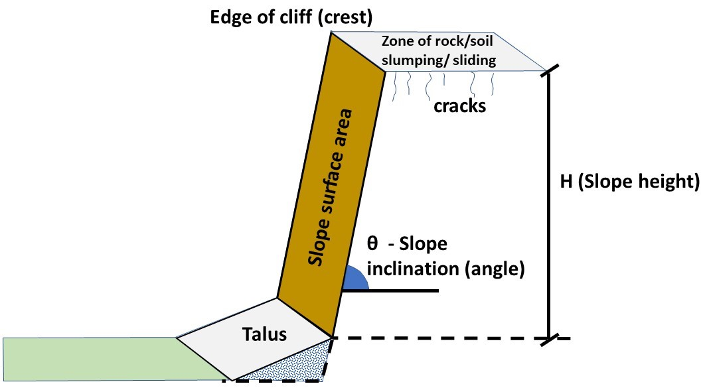

The Rockfall Activity Rate System
The Rockfall Activity Rate System (RoARS) provides indication/forecasts of the magnitude of rock/debris that could fall from a slope – of a given height, angle, and area – at different levels of earthquake shaking. These forecasts are derived from an empirical relationship between the volumes of rock that fell from the selected Port Hills rock slopes during the 2010/11 Canterbury Earthquake Sequence (CES), New Zealand, in response to earthquake shaking.
RoARS is underpinned by the assumption that if a slope is strongly shaken by an earthquake, the volume of debris that falls from it is a function of the magnitude of the shaking (e.g., Peak Ground Acceleration) and the geometry of the slope (e.g., slope, height, and area). The method and results are presented in Massey et al. (2022).
The methodology described below is split into several steps. In summary, these are: Step 1) estimate the rockfall volumes that fell from a selected number of rock slopes during the CES; Step 2) estimate the earthquake-induced ground motions for the main earthquakes in the CES at slopes of interest; Step 3) carry out a regional-scale statistical analysis of the factors influencing rockfall susceptibility – in this case the volume of debris that could fall from each slope – using the results from Steps 1) and 2).
The data, results, and analyses relate to the ‘larger’ slopes in the Port Hills of Christchurch. These slopes all meet the criteria of being: (1) coastal or relict coastal in origin; (2) formed in rock; (3) greater than 10 m in vertical height (referring to the rock-dominated portion of the slope); (4) steeper than 45° (referring to the mean angle of the rock-dominated portion of the slope); and (5) greater than 50 m2 in surface area. Such slopes were found to be susceptible to failure during the CES. Slopes less than 10 m in height and/or flatter than 45° did not typically fail during the CES. Slopes less than 50 m2 in surface area were not included as they are too small and numerous for this analysis. Slopes modified by anthropogenic cutting were also not included unless they were originally abandoned coastal slopes and satisfied the aforementioned slope criteria.
This Data has been prepared by the Institute of Geological & Nuclear Sciences Limited (GNS Science) as part of a New Zealand Government funded research project. The information is derived from multiple data sources, including third party, which are at various scales and resolutions.
The Data is a regional-scale interpretation that is designed to support general concepts of how much debris may fall from a slope if subjected to a given amount of earthquake shaking. As there is always uncertainty associated with such data, GNS Science gives no warranties of any kind concerning its assessment and estimates, including accuracy, completeness, timeliness or fitness for purpose, and accepts no responsibility for any actions taken based on or reliance placed on them by any person or organisation. GNS Science excludes to the full extent permitted by law any liability to any person or organisation for any loss, damage or expense, direct or indirect, and however caused, whether through negligence or otherwise, resulting from any person or organisation's use of or reliance on this Data.
As much of the analysis and assessment relies on inferenceß from slopes within a particular geology and physiographical setting that were shaken by a particular suite of earthquakes, on-site verification is required as to whether the Data is applicable for use at a particular site of interest. The Data is intended to be used by engineering geologists and geotechnical practitioners as part of their regional-scale ‘desktop’ assessment. This Data should not be used as a replacement or substitute for site-specific analyses and assessments.
Keefer, D. K. (1984), Landslides caused by earthquakes. Geological Society of America Bulletin. 95(4), 406–421.
Macfarlane, D. F., & Yetton, M. D. (2013), Management and documentation of geotechnical hazards in the Port Hills, Christchurch, Following the Canterbury earthquakes. Hanging by a thread. Proceedings of the New Zealand Geotechnical Society Inc. 19th Symposium, 20-23 November 2013, Queenstown, New Zealand. Massey C.I., McSaveney M. J., Taig, T., Richards, L., Litchfield, N. J., Rhoades, D. A., McVerry, G. H., Lukovic, B., Heron, D. W., Ries, W., & Van Dissen, R. J. (2014), Determining rockfall risk in Christchurch using rockfalls triggered by the 2010–2011 Canterbury earthquake sequence. Earthquake Spectra. 30(1): 155-181. Massey, C.I.; Olsen, M.J.; Wartman, A.; Senogles, A.; Lukovic, B.; Leshchinsky, A.; Archibald, G.C.; Litchfield, N.J.; Van Dissen, R.J.; de Vilder, S.J.; Holden, C. 2022 Rockfall activity rates before, during and after the 2010/11 Canterbury Earthquake Sequence. Journal of Geophysical Research. Earth Surface, 127(3): e2021JF006400; doi: 10.1029/2021JF006400